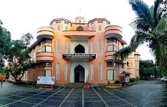

TKM COLLEGE OF ENGINEERING

Description
T K M College of Engineering, the fondly remembered alma mater of thousands of capable engineers worldwide,
has for more than half a century, shown how a visionary and his ideas can transform an entire state’s educational aspirations.
Revered by many and eulogized by many more, Janab Thangal Kunju Musaliar still remains in our memory as the torch bearer of
professional education in the private sector in the State of Kerala. I humbly believe that the T K M College Trust has been able to.